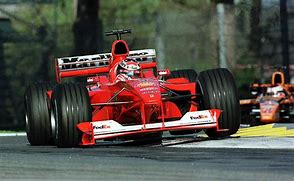

2000

Le più importanti scuderie che hanno partecipato al Campionato Mondiale di Formula 1 nel 2000 erano:
- McLaren
- Ferrari
- Peugeot
- Jaguar
Il Campionato Mondiale di Formula 1 del 2000 è stato vinto dalla scuderia West McLaren Mercedes dal pilota Mika Häkkinen
HOME
Tutti i diritti sono riservati
Sito realizzato da Boniotti Elisa, Lucchini Davide, Tassone Thomas